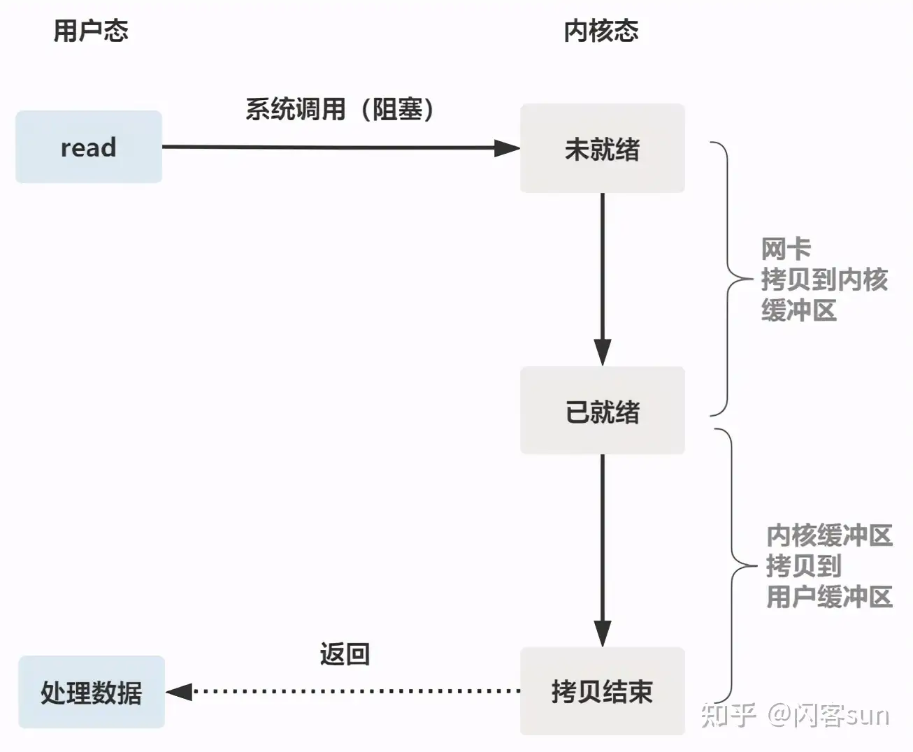
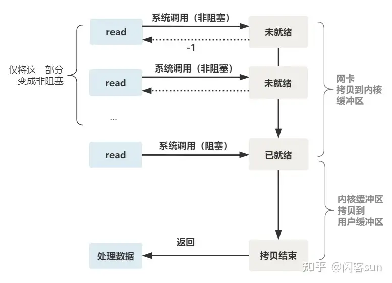
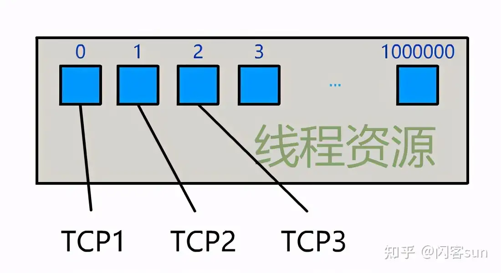
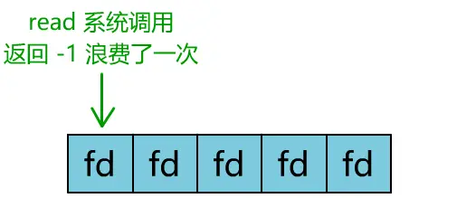
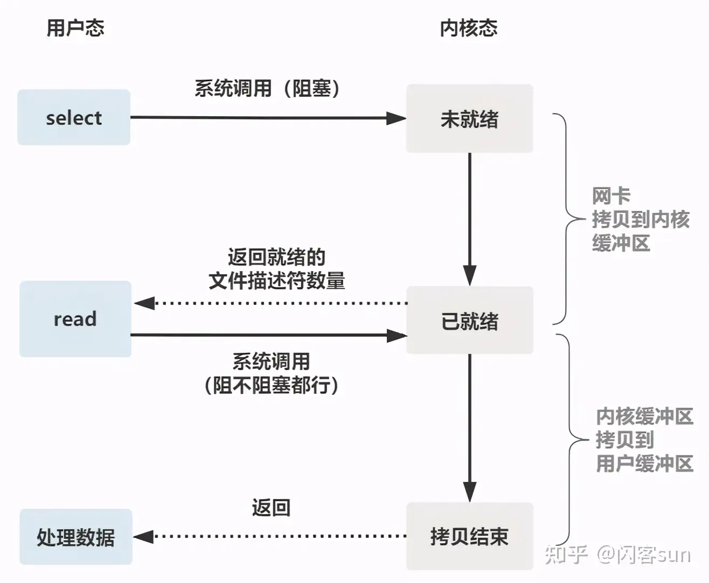

IO 多路复用
阻塞 IO
服务端为了处理客户端的连接和请求的数据，写了如下代码:
listenfd = socket(); // 打开一个网络通信端口 bind(listenfd); // 绑定 listen(listenfd); // 监听 while(1) { connfd = accept(listenfd); // 阻塞建立连接 int n = read(connfd, buf); // 阻塞读数据 doSomeThing(buf); // 利用读到的数据做些什么 close(connfd); // 关闭连接，循环等待下一个连接 }
这段代码会执行得磕磕绊绊，就像这样：
可以看到，服务端的线程阻塞在了两个地方
- 一个是 accept 函数
- 一个是 read 函数
如果再把 read 函数的细节展开，会发现其阻塞在了两个阶段。
整体流程如下图：

如果这个连接的客户端一直不发数据，那么服务端线程将会一直阻塞在 read 函数上不返回，也无法接受其他客户端连接
这就是传统的阻塞 IO
非阻塞IO
为了解决上面的问题，其关键在于改造这个 read 函数
有一种聪明的办法是，每次都 创建 一个新的 进程 或 线程 ，去调用 read 函数，并做业务处理
while(1) { connfd = accept(listenfd); // 阻塞建立连接 pthread_create（doWork); // 创建一个新的线程 } void doWork() { int n = read(connfd, buf); // 阻塞读数据 doSomeThing(buf); // 利用读到的数据做些什么 close(connfd); // 关闭连接，循环等待下一个连接 }
这样，当给一个客户端建立好连接后，就可以立刻等待新的客户端连接，而不用阻塞在原客户端的 read 请求上
不过，这不叫非阻塞 IO，只不过用了多线程的手段使得主线程没有卡在 read 函数上不往下走罢了 操作系统提供的 read 函数仍然是阻塞的
真正的非阻塞 IO，不能是通过用户层的小把戏，而是要恳请 操作系统为提供一个 非阻塞的 read 函数 。这个 read 函数的效果是，如果没有数据到达时（到达网卡并拷贝到了内核缓冲区），立刻返回一个错误值 -1 ，而不是阻塞地等待。操作系统提供了这样的功能，只需要在调用 read 前，将 文件描述符 设置为 非阻塞 即可
fcntl(connfd, F_SETFL, O_NONBLOCK); int n = read(connfd, buffer) != SUCCESS);
这样，就需要用户线程循环调用 read，直到返回值不为 -1，再开始处理业务：
注意：非阻塞的 read，指的是在 数据到达前 ，即数据还未到达网卡，或者到达网卡但还没有拷贝到内核缓冲区之前，这个阶段是非阻塞的。当 数据已到达内核缓冲区 ，此时调用 read 函数 仍然是 阻塞的 ，需要等待数据从内核缓冲区拷贝到用户缓冲区，才能返回
整体流程如下图

IO 多路复用
为每个客户端创建一个线程，服务器端的线程资源很容易被耗光

当然还有个聪明的办法，可以每 accept 一个 客户端连接 后，将这个 文件描述符 connfd 放到一个数组里
fdlist.add(connfd);
然后弄一个新的 线程 去不断 遍历 这个数组，调用每一个元素的 非阻塞 read 方法
while(1) { for(fd <-- fdlist) { if(read(fd) != -1) { doSomeThing(); } } }
这样，就成功用一个线程处理了多个客户端连接

是不是觉得这有些多路复用的意思？ 但这和用多线程去将阻塞 IO 改造成看起来是非阻塞 IO 一样，这种遍历方式也只是用户自己想出的小把戏
每次遍历遇到 read 返回 -1 时仍然是一次浪费资源的系统调用。在 while 循环里做系统调用，就好比分布式项目时在 while 里做 rpc 请求一样，是不划算的
所以，还是得恳请操作系统，提供给一个有这样效果的函数，将一批文件描述符通过一次系统调用传给内核，由内核层去遍历，才能真正解决这个问题
select
select 是操作系统提供的 系统调用 函数，通过它，可以把一个文件描述符的数组发给操作系统，让操作系统去遍历，确定哪个文件描述符可以读写， 然后告诉调用者去处理：
select系统调用定义如下：
// nfds:监控的文件描述符集里最大文件描述符加1 // readfds：监控有读数据到达文件描述符集合，传入传出参数 // writefds：监控写数据到达文件描述符集合，传入传出参数 // exceptfds：监控异常发生达文件描述符集合, 传入传出参数 // timeout：定时阻塞监控时间，3种情况 // 1.NULL，永远等下去 // 2.设置timeval，等待固定时间 // 3.设置timeval里时间均为0，检查描述字后立即返回，轮询 int select( int nfds, fd_set *readfds, fd_set *writefds, fd_set *exceptfds, struct timeval *timeout);
服务端代码，首先一个线程不断接受客户端连接，并把 socket 文件描述符放到一个 fdlist 里
while(1) {
connfd = accept(listenfd);
fcntl(connfd, F_SETFL, O_NONBLOCK);
fdlist.add(connfd);
}
然后，另一个线程不再自己遍历，而是调用 select ，将这批文件描述符 fdlist 交给操作系统去遍历 ：
while(1) { // 把一堆文件描述符 list 传给 select 函数 // 有已就绪的文件描述符就返回，nready 表示有多少个就绪的 nready = select(list); ... }
当 select 函数返回后，用户依然需要遍历刚刚提交给操作系统的 fdlist。只不过，操作系统会将 准备就绪 的 文件描述符 做上 标识 ，用户层将不会再有无意义的系统调用开销：
while(1) { nready = select(list); // 用户层依然要遍历，只不过少了很多无效的系统调用 for(fd <-- fdlist) { if(fd != -1) { // 只读已就绪的文件描述符 read(fd, buf); // 总共只有 nready 个已就绪描述符，不用过多遍历 if(--nready == 0) break; } } }
其直观效果如下：
几个细节：
select 调用需要传入 fd 数组，需要拷贝一份到内核，高并发场景下这样的拷贝消耗的资源是惊人的
可优化为不复制
select 在内核层仍然是通过遍历的方式检查文件描述符的就绪状态，是个同步过程，只不过无系统调用切换上下文的开销
内核层可优化为异步事件通知
select 仅仅返回可读文件描述符的个数，具体哪个可读还是要用户自己遍历
可优化为只返回给用户就绪的文件描述符，无需用户做无效的遍历
整个 select 的流程图如下：

可以看到，这种方式，既做到了一个线程处理多个客户端连接（文件描述符） 又减少了系统调用的开销（多个文件描述符只有一次 select 的系统调用 + n 次就绪状态的文件描述符的 read 系统调用）
poll
poll 也是操作系统提供的 系统调用 函数
int poll(struct pollfd *fds, nfds_tnfds, int timeout); struct pollfd { intfd; /*文件描述符*/ shortevents; /*监控的事件*/ shortrevents; /*监控事件中满足条件返回的事件*/ };
它和 select 的主要区别就是，去掉了 select 只能监听 1024 个文件描述符的限制
epoll
epoll 是最终的大 boss，它解决了 select 和 poll 的一些问题
epoll 主要就是针对这前面所描述的三个缺点进行了改进：
- 内核中 保存 一份 文件描述符集合 ，无需用户每次都重新传入，只需 告诉 内核 修改的部分 即可
- 内核不再通过轮询的方式找到就绪的文件描述符，而是通过 异步 IO 事件 唤醒
- 内核仅会将 有 IO 事件 的 文件描述符 返回给用户，用户也无需遍历整个文件描述符集合
具体，操作系统提供了这三个函数：
// 第一步，创建一个 epoll 句柄 int epoll_create(int size); // 第二步，向内核添加、修改或删除要监控的文件描述符。 int epoll_ctl(int epfd, int op, int fd, struct epoll_event *event); // 第三步，类似发起了 select() 调用 int epoll_wait(int epfd, struct epoll_event *events, int max events, int timeout);
使用起来，其内部原理就像下图：
如果你想继续深入了解 epoll 的底层原理，推荐阅读 https://zhuanlan.zhihu.com/p/361750240 从 linux 源码级别，一行一行非常硬核地解读 epoll 的实现原理，且配有大量方便理解的图片，非常适合源码控的小伙伴阅读
总结
一切的开始，都起源于这个 read 函数是操作系统提供的，而且是阻塞的，叫它 阻塞 IO
为了破这个局，程序员在用户态通过多线程来防止主线程卡死
后来操作系统发现这个需求比较大，于是在操作系统层面提供了非阻塞的 read 函数，这样程序员就可以在一个线程内完成多个文件描述符的读取，这就是 非阻塞 IO
但多个文件描述符的读取就需要遍历，当高并发场景越来越多时，用户态遍历的文件描述符也越来越多，相当于在 while 循环里进行了越来越多的系统调用
后来操作系统又发现这个场景需求量较大，于是又在操作系统层面提供了这样的遍历文件描述符的机制，这就是 IO 多路复用 。多路复用有三个函数：
- 最开始是 select
- 然后出现了 poll 解决了 select 文件描述符的限制
- 最后实现了 epoll 解决 select 的三个不足
有人说多路复用之所以效率高，是因为用一个线程就可以监控多个文件描述符 这显然是知其然而不知其所以然，多路复用产生的效果，完全可以由用户态去遍历文件描述符并调用其非阻塞的 read 函数实现 而多路复用快的原因在于，操作系统提供了这样的系统调用，使得原来的 while 循环里多次系统调用，变成了一次系统调用 + 内核层遍历这些文件描述符 就好比平时写业务代码，把原来 while 循环里调 http 接口进行批量，改成了让对方提供一个批量添加的 http 接口，然后一次 rpc 请求就完成了批量添加